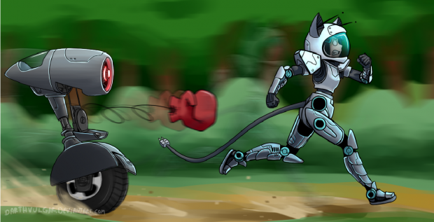

Citation :
Une grande nouvelle est arrivée pour toute la communauté de Starbound !
Il y a quelques temps la communauté a appris que les devs avaient lancé une bêta fermée, réservée exclusivement à leur famille et à leurs amis. Plus tard, nous avons eu des informations sur d’éventuelles pré-commandes du jeu.
Désormais, Tiyuri soumet l’hypothèse de mettre en place une bêta ouverte à disposition des personnes ayant pré-commandé le jeu.
[...]
Accéder à l'article
Hum enfin une bonne nouvelle reste plus qu'à espérer que cela devienne réalité

Owiiii, une bêta *-*
Plus qu'à négocier pour l'avoir :3
Tu peut toujours te marier avec un dev mon cher Bibi

Je suis peut-être bête mais... En quoi de l'argent vont aider les devs a avancer le jeux ? Ils ont tout le matériel nécessaire non?! ^^"
On a jamais trop d'argent. :3
L argent ne sert pas qu'à acheter du matériel...
Bah l'argent fait vivre les dèv, ptetre qu'ils ont actuellement des ptits boulots à côté pour avoir de quoi manger, et donc qu'un financement pourrait leur permettre de travailler plus sur le jeu :)
(Après, c'est qu'une hypothèse hein ^^')
Je pense que l'argent na rien n'a voir la dedans dans le sens ou la bêta (la précommande) ne servira qu'a localiser les bug plus vite est comme sa les devs n'aurons plus a jouer des heure pour essayer de trouver des bug puisque les bêta testeur serons la pour sa enfin voila quoi
Tiyuri a dit explicitement que la bêta servirait à développer le jeu plus rapidement, c'est qui prend en compte l'argent et la résolution de bugs, d'après moi :)